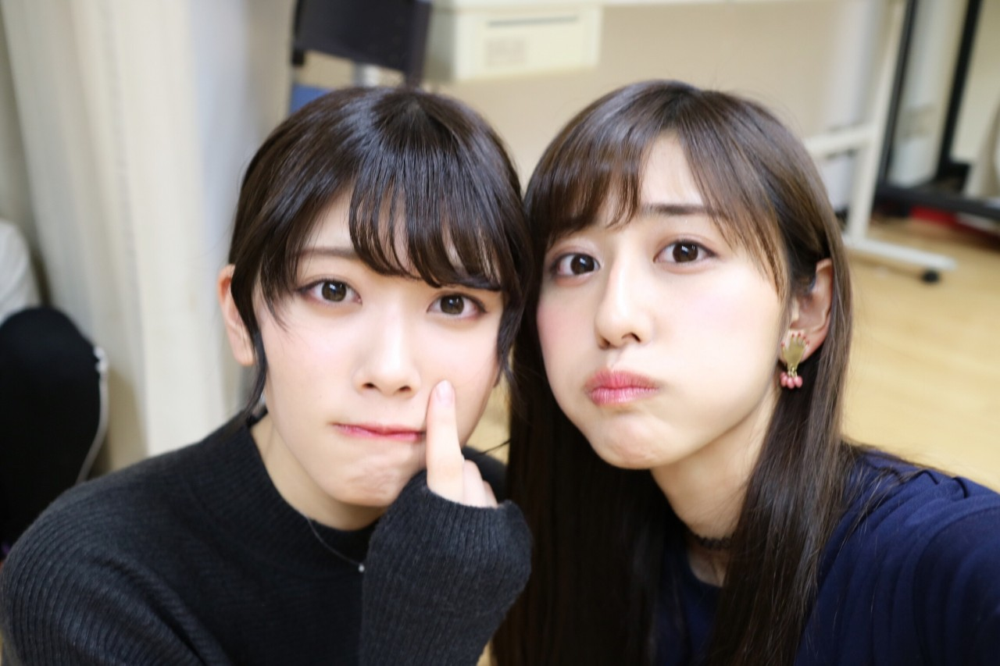
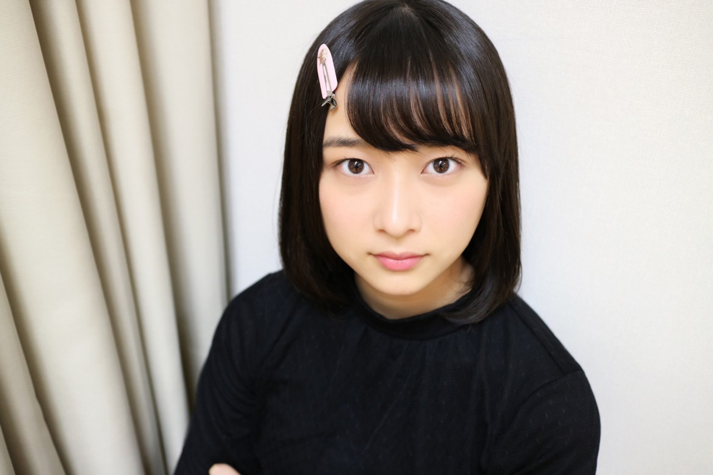
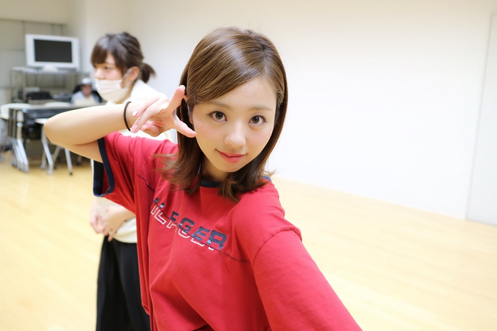
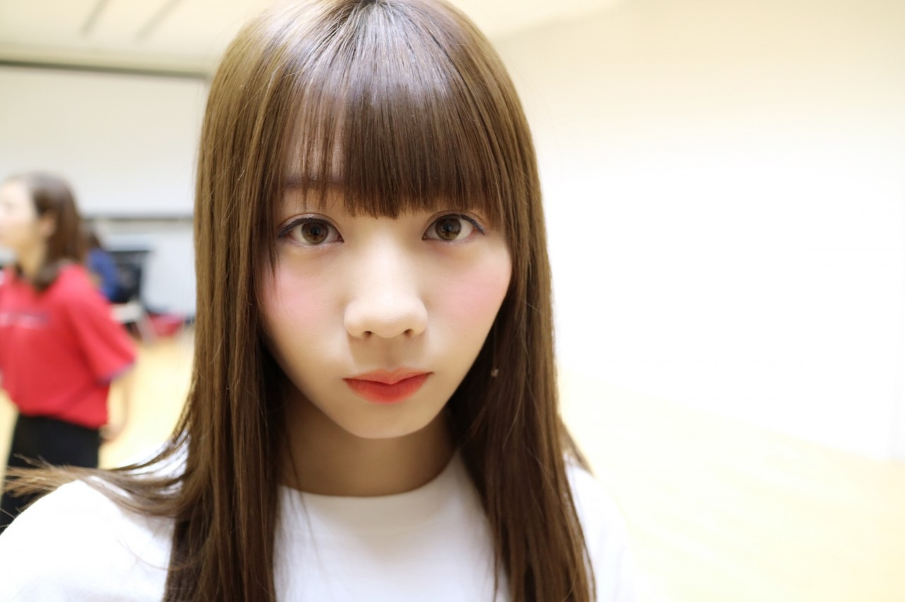

| 2016/12 14 Wed | 斎藤ちはる カメラマン。 |
ちはるーむへようこそ！
今日は、アンダーライブの開演前に流した
メンバーのオフショットを
少しだけ載せたいと思います(﹡ˆ ˆ﹡)
ちーちゃんカメラマン！！
第一弾！！

じゅんちゃんちーちゃん。
ハンサム担当。(!?)

真っ直ぐな目をした、絢音ちゃん。
なんて綺麗な！澄んだ！凛々しい！
瞳をしているのだろうか。

ダンスの練習をしている真洋。
真洋はメンバー1、歌だけではなく
ダンスも上手なので
メンバーは真洋にどうしても頼ってしまう(> <)
いつも快く、優しく教えてくれる！
そして分かりやすい◎

愛未の少し寂しげな表情。
愛未のマイペースさ加減には
みんな手を焼いているけど(笑)、
なんだかんだみんな愛未のこと大好きだよ。
アンダーメンバー、
みんな熱くて優しくて強い子達だよ。
それぞれが色々な思いを持ちながら
毎日を駆け抜けている。
大切な仲間です。
--------------------------------♡
♬ ChihaMusic
「友達の唄」BUMP OF CHICKENさん
優しい声と、優しい歌詞に、
心が温かくなる。
心地が良くてポカポカする。
"ひとりに怯え 迷った時
心の奥 灯りに気付く
そうかあなたは こんなに側に
どんな暗闇だろうと 飛んでいける"
この世の中で自分だけが寂しいんじゃないか、
一人なんじゃないか、って
悩んでも迷っても
何処かには味方はいるはずだし
見てくれている人はいる。
そんな存在がいてくれるならば
自分も誰かのそんな存在になりたい。
寒いね〜...
でも冬の空が大好きなので
私は冬という季節が大好き！
誕生日もあるしね♡
おやすみ〜
斎藤ちはる